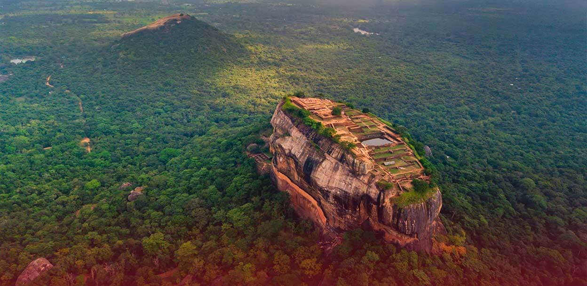
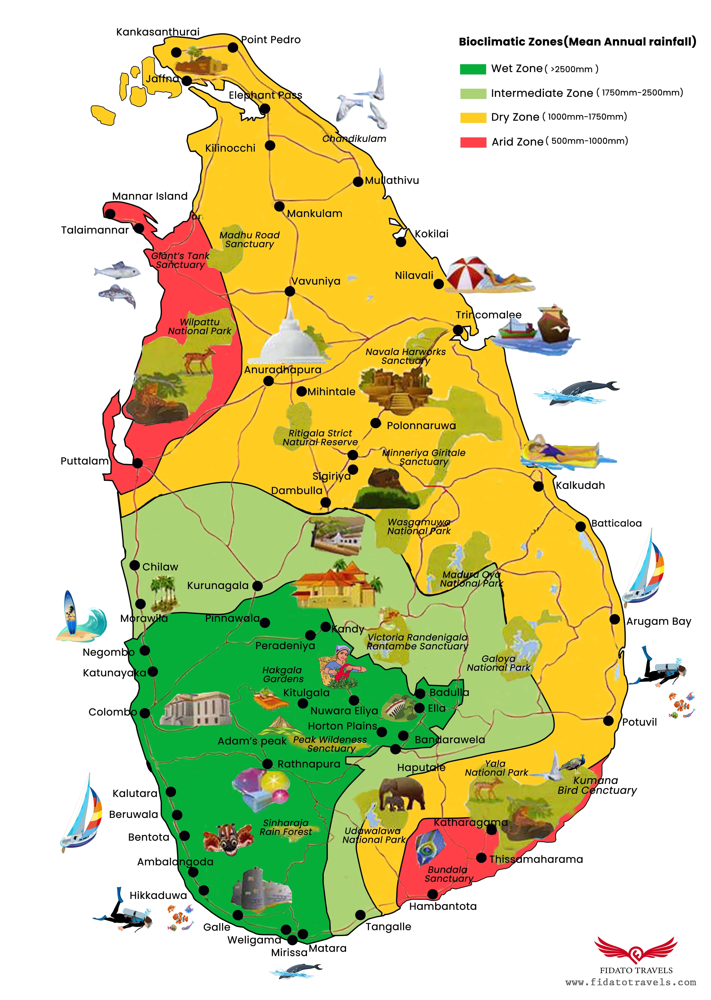
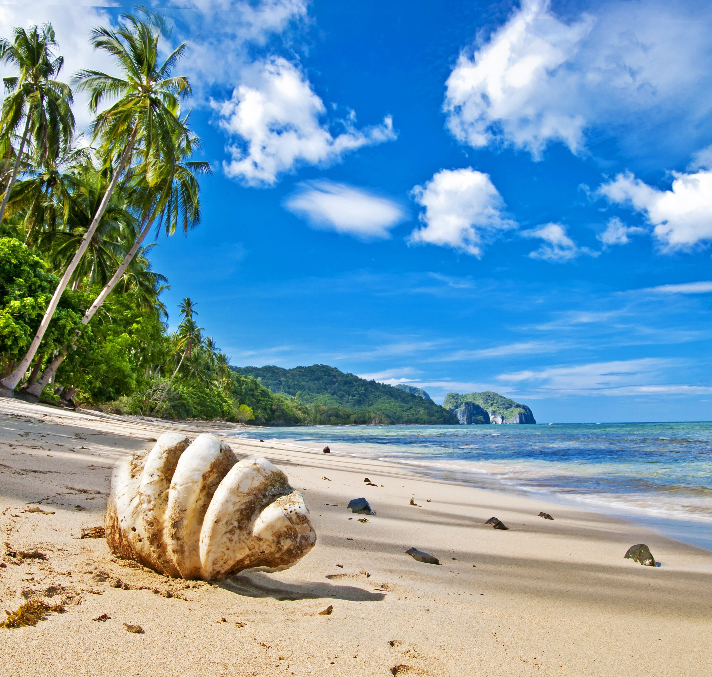
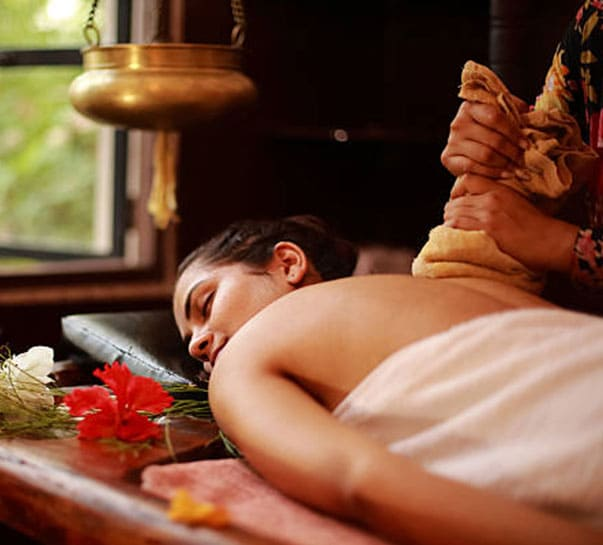

We will give you the best experience
no matter what your travel plan is
Get in touch
Welcome to Sri Lanka
A tiny island off the southern coast of India, Sri Lanka is a traveler's dream with so much variety in experiences, enclosed within a small area.
With eight UNESCO World Heritage sites, Sri Lanka has 2000 plus years of culture to be discovered at its legendary temples and ancient monumental sites constructed with advanced technology that modern architects and engineers marvel over.

The varying climate you experience across the island is what most find astounding about Sri Lanka. From the glorious heat (27-30°C) in the beautiful coastal areas and other iconic low-lying cities it only takes 3 hours to reach the pleasantly cool highlands (18°C) of Kandy, Nuwara Eliya and Haputale where you find beautiful, misty mountains and picturesque waterfalls.
You can take a scenic train ride to the hill country, winding through lush tea plantations. Sri Lankan tea (or Ceylon Tea) is known to be the finest in the world, garden fresh and produced with the utmost care. You can also take an informative tour around popular tea factories located in the central highlands and taste some of the fine unblended teas.
Enjoy the traditional Sri Lankan cuisine made with the finest ingredients of local spices and herbs. The small island is a popular exporter of a variety of spices. Sri Lanka’s ‘Ceylon Cinnamon’ is world-renowned for its unique flavour, colour and aroma. The white and green varieties of cardamom pods grown here makes delectable dishes.
The multi-ethnic population in the country embraces cultural diversity and are well-known amongst tourists to be warm, hospitable people.
With its alluring history, culture and natural beauty, Sri Lanka has amazing experiences to offer anyone and everyone. We at Fidato are committed to giving you that wonderous experience and variety no matter what your travel plan is.

STUNNING BEACHES AND
WATER SPORTS
Being surrounded by the Indian Ocean Sri Lanka has several beaches that are known to be dream destinations of travelers world-wide. You can experience water sports and many other activities such as surfing, snorkeling, scuba diving, jet skiing, whale watching and so much more. Take your pick from the water sports hub of Bentota, the beautiful palm-fringed beaches of Arugam Bay which are a surfer’s paradise or the whale watching shoreline in Mirissa. Let us know what appeals to you and be assured that your needs will be met!

AYURVEDA AND TRADITIONAL HEALTH SYSTEM
Relax your body and mind whilst experiencing the remarkable practice of Ayurvedic healing and wellness treatments. Indulge your senses with herbal medicinal treatments that date back nearly 3000 years at one of the many retreats found across the country. This traditional health system uses an indigenous knowledge base and is known for treating a variety of non-communicable diseases. Ancient rock inscriptions show evidence of the medical healing system that existed centuries ago. Apart from the medicinal treatments for diseases, beauty treatments, massages, yoga and panchakarma are focused on improving overall wellness by refining the individual’s mind and inner-system which is believed to be off balance.This traditional health system uses an indigenous knowledge base and is known for treating a variety of non-communicable diseases. This traditional health system uses an indigenous knowledge base and is known for treating a variety of non-communicable diseases.